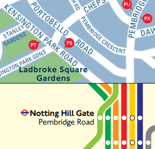
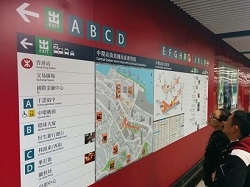

Interests
App Strategy Consultant / Product Manager
- Hired to create a new team to integrate mobile apps into GBST’s existing product lines.
- Remotely managed and cultivated three contract staff in Vietnam as an agile development team on a two-week release schedule. Used JIRA tracking software to manage team efforts.
- Participated in app development, as needed, using Cordova and Node.js frameworks for quick hybrid apps.
- Evaluated client needs and proposed strategies for entering mobile market and leap-frogging competitors.
- Adapted GBST’s front-office/CRM software into a mobile app for wealth managers.
- Managed the design and development of a unique app for back-office trading operations that simplified the interface of our core product, while keeping most trade, client, and risk information at the user’s fingertips.
- Developed and maintained new APIs to connect mobile apps to existing client data.
- Identified key features of existing web apps to adapt for touch interfaces in our initial prototypes.
- Studied client operations and learned details of finance theory in order to build better tools for the industry.
- Utilized information theory to optimize dashboard design and prioritize interactive features.
- Collected and organized regular feedback from clients and industry experts into development sprints.
- Consulted with the division CEO, sales team, and key customers to create marketing/support materials.
- Who: GBST, Ltd.
- When: 2015-2016
- Where: Hong Kong, China
Based in Australia, GBST develops financial software for wealth managers, as well as institutional and retail brokers.
Director of Operations and Performance Management
- Improved sales strategies, increasing traffic by establishing new metrics to best measure our effect.
- Identified gaps in and reorganized the company budget to successfully reduce costs and increase revenues.
- Established a pricing strategy to be attractive to both low-touch users and large enterprise clients.
- Led product marketing and investigated new strategies for advertising and social network targeting.
- Guided product development to prioritize the needs of our customers.
- Who: Exicon, Ltd.
- When: 2014
- Where: Hong Kong, China
Exicon develops and sells an enterprise-class SaaS platform to manage its clients’ mobile apps and developers.
Program Manager
- Led LoadStar’s operations in Asia following corporate restructuring, rebuilding team from 4 staff to 28.
- Directed hardware development of our premier product through a new Chinese manufacturing partner.
- Led small teams of engineers and operational staff in 8 customer projects valued at a total of $1.5M, including several of the first profitable programs in the company.
- Managed the capture effort and program execution of Savi Network's largest customer, an $800k contract.
- Collected and analyzed customer requirements, then used them to research and implement innovative changes to Savi’s SaaS app. Identified company needs outside my duties & executed plans to meet them.
- Created formal processes within the company for testing new equipment.
- Developed custom software tools that increased employee efficiency and added analysis capabilities.
- Who: Savi Networks, LLC & Loadstar, Inc.
- When: 2007-2014
- Where: Mountain View, CA & Hong Kong
Savi was a logistics tech company formed as a joint partnership between Lockheed Martin and Hutchison Whampoa. When Lockheed Martin sold its share in 2010, the company was rebranded as LoadStar.
Risk Management & Flight Software Test Engineer
TSAT was a military communications satellite system commissioned by the United States Air Force.
- Directed the creation of mitigation plans that would eliminate 90% of program risk over contract lifetime.
- Managed authors of a 500+ page proposal document for a large defense contract and won the business.
- Prepared the proposal in time to meet the original specified deadline, a rare occurrence for Air Force contracts.
- Authored the proposal section detailing the management of more than $100M in program risk.
- Monitored the team's mitigation of more than $15M of program risk.
- Developed new analysis tools to clarify program risks and opportunities, and adjusted mitigation priorities.
- Graduate of the Lockheed Martin Engineering Leadership Development Program, for the top 5% of new staff.
SBIRS was a series of U.S. Air Force satellites used to for early warning of ballistic missiles.
- Designed, developed, peer-reviewed and executed unit and functional tests for the flight software of the first highly-elliptical orbit satellite in the SBIRS constellation, validating specific system requirements.
- Participated in formal system verification tests, executed under direct Air Force oversight.
- Who: Lockheed Martin Corporation
- When: 2004-2007
- Where: Sunnyvale, CA & Hong Kong
Interactive Game of Thrones Map with Spoiler Control
The novel series by George R.R. Martin, "A Song of Ice and Fire" covers a massive world and dozens of characters. As I was reading the books, I found it difficult to keep track of who was where and how close one place was to another. Each book included small maps in the front pages, but I knew there should be an easier way.
As you would expect, there were several maps available on the Internet, all static images. One was large enough that it seemed like a good option for a new feature in the Google Maps API, custom tiles using ImageMapType. I cut the original image into tiles, and had a map that could be panned and zoomed. On top of that base layer, I added markers and polygons that made the map click-able and displayed additional information. Next I plotted where each major character travelled on the map and associated each step with a specific point in the story.
The slider in the top right of the website let's the user show how much of the books they have read (or how much of the TV show they have seen). As the slider is moved, the character paths are updated so that the user sees what has already happened, but is protected from plot details they haven't yet reached.
After a 2014 feature in The Guardian, the site went viral, reaching more than 9.5 million sessions by mid-2016.
Press and Other Discussions
- Google Maps Mania - 2012, 2014
- Reddit.com - 2012, 2013, 2014, 2015, 2016
- Los Siete Reinos (Spanish) - January 15, 2013
- JoeMonster.org (Polish) - April 17, 2013
- Tech Gear (Greek) - June 8, 2013
- Komsomolskaya Pravda (Russian) - April 15, 2014
- The Guardian - April 15, 2014
- The Onion AV Club - April 21, 2014
- CNET.com - April 21, 2014
- Gizmodo - April 21, 2014
- Tom's Guide (French) - April 22, 2014
- El Confidencial (Spanish) - April 22, 2014
- News.com.au - April 22, 2014
- Haaretz (Hebrew) - April 22, 2014
- Geekologie - April 22, 2014
- TN - April 22, 2014
- Nerdist - April 22, 2014
- Slate.fr (French) - April 23, 2014
- People - April 23, 2014
- Maxim (Czech) - April 23, 2014
- MarketWatch: The Margin - April 23, 2014
- The Daily Mail - April 23, 2014
- Buzzfeed - 2014, 2015
- Olhar Digital (Portuguese) - April 24, 2014
- The Escapist - April 24, 2014
- Game of Thrones BR (Portuguese) - April 29, 2014
- Internazionale (Italian) - April 30, 2014
- DNA India - May 3, 2014
- der Standard (German) - May 4, 2014
- Focus (German) - May 5, 2014
- Esquire - April 14, 2016
- The Verge - June 28, 2016
- Lifehacker - July 3, 2016
- The Next Web - July 4, 2016
- Polygon - July 4, 2016
- Wired (Italian) - July 5, 2016
- BoingBoing.net - July 5, 2016
- Origo (Hungarian) - July 18, 2016
Masters' Swimming Admin Tools
My wife and I have acted as captains for our masters' swimming team (age 25 to 105) for almost four years now. Although meets and teams in many countries are managed exclusively online, Hong Kong swimming remains mired in lots of paperwork. When we joined the team, it would take several hours to prepare entry forms for each competition the team entered.
Using Google's scripting tools in their Forms & Sheets products, I developed software for sign-up forms to be automatically generated for each upcoming competition. The software outputs entry forms that match the handwritten paperwork required by the Hong Kong Amatuer Swimming Association, as well as worksheets to be used during the meets. The worksheets help our teammates know when its time to swim and help our coaches record finish times and splits as they race.
When the times are typed into the digital copy of the worksheet, the software checks for new records and personal best times. Team records are automatically updated for later comparison with official Hong Kong records.
Hong Kong Taxi Stands Mobile App
After one too many treks through a random neighborhood of Kowloon, trying to remember where I saw a cross-harbour taxi stand several hours before, I thought there might be an opportunity for a solution. Although other mobile apps map out the location of cross-harbour taxi stands, I thought that the user interface could be improved upon.
Cross-Harbour Taxi Stands are locations where passengers can ride between Hong Kong Island & Kowloon and only need to pay for the tunnel fee one-way. If they grab a cab on the street or at a normal taxi stand, they'll be responsible to pay $10-15 for the driver's trip back as well. In addition, taxis are divided into three groups by geography and given different colors. My app helps users filter more than 400 taxi stands by both of these criteria and get directions from their current location to whichever stand they prefer. The interface can easily be switched back anf forth from Engish to Chinese.
If the user is nowhere near a taxi stand, the app has a few options left. It has phone numbers for all the taxi depots in Hong Kong, as well as links to multiple other mobile apps that can help the user bring a taxi to them.
If you spot any errors in the app or have any locations to add, drop a line at the app's Facebook page.
MyLegCo Mobile App
Under Development
Although I'm usually turned off by politics, I've been impressed by tools that others have built to make government more transparent to its people. The Sunlight Foundation has a great (but retired) mobile app named, simply, "Congress." GovTrack and the Washigton Post provide a similar service on the web.
I found that the Hong Kong government provides lots of similar data through its Open LegCo program, but there don't seem to be tools available to easily parse voting records and floor speeches to make them actionable. MyLegCo is an attempt to change that.
In its initial release, MyLegCo will list upcoming and recent meetings of committees, subcommittees, and the full council, constituencies, members, and parties. It will summarize bills under consideration and show the results of votes in the full council and major committees, down to individual member votes.
In future releases, bills, motions, and speeches will be searchable by topic and filterable by date or member. Users will be able to pin motions, bills, or committees for later reference. Notifications can be configured to alert users when topics they care about are being discussed.
Memrise Content & Scripts
When I started studying Mandarin Chinese, I found a relatively new learning website named Memrise.com. At its core, Memrise is a set of flashcards that help you remember facts of all types, from animal identification to history trivia. Most of their content, though focuses on learning foreign languages, as I was. Flash cards are presented not in a strict order, but algorithmically based on what the tool thinks you need immediate help with.
Courses are mostly user-curated (I made a few to match the vocabulary in my courses' testbooks). Each "flashcard" is augmented with what the website calls mems (a play on memes) that help learners fix an individual fact into their memory using visual, audio, or mnemonic cues.
Although the platform grew in user-based content, the platform was poorly maintained for quite a while. User forums were identifying easy-to-implement improvements, but Memrise didn't have the manpower to implement them. I joined a few other volunteers in writing user scripts to make temporary fixes and improvements to the site. Most of these no longer work, since Memrise has since been through a few redesigns, but they were good practice in reverse-engineering an existing app.
SoHo Bus Routes Diagram
A spider map is designed to show transit routes that depart form a single location. It's primarily designed to be placed on a wall for pedestrians to view as they leave a train and look for the right bus for their destination. Transport for London uses these maps extensively to show buses serving individual neighbourhoods. Peter Dunn also made an excellent variation for one street in Washington, D.C.
Peter's work made me think that Hong Kong might be good place to implement spider maps like these. Although commuters may not need to look at a map to figure out where they are going, Hong Kong residents often take public transportation to reach parts of town that they don't know well. In addition, visitors may take public buses to reach certain destinations (e.g. Sai Kung, Southern District, or Lantau Island). Right now, the MTR labels station exits that are near bus stops, but there is rarely any indication of which routes pass by each exit.
Hong Kong, though, has a complex network of public bus routes. There are five different companies [1,2,3,4,5] operating full-sized buses and both red and green minibuses added to the mix. The map that Peter Dunn made benefited from the very straight streets of Washington, DC; Hong Kong has a maze of curvy roads (many of them one-way only). A prototype was necessary to see how all the pieces might work together. I worked on the area near my home in SoHo. If the idea was never picked up by the MTR, I'd at least have a map for visitors to use.
I'd love to see a map like this made for each MTR station and posted on the wall. I think it would fill in an important information gap for passengers.
- MTR System Map (for showing which lines to follow to another station)
- Station Layout (for showing how to find shops & services within an individual station)
- Street/Location Map (for choosing the right exit if you are walking nearby)
- Spider Map/Bus Route Diagram (for choosing the right bus stop & route number if you need to travel far away from any MTR station)
If you like the map I made, feel free to print it out and use it. If you'd like to see more, consider asking the MTR [web form, Facebook] or the Transport Department to study the idea.
Time-Scaled MTR Maps
I was intrigued by the time-scaled diagrams of Boston's & DC's subway lines and commuter rail created by Peter Dunn of Stone Brown Design and thought that something similar should exist for Hong Kong.
Hong Kong doesn't have the same hub & spoke layout as Boston, So I had to choose a station for the "starting point." Central was the closest station to me, though a map centered on Admiralty, Mongkok or Hung Hom would be an interesting follow-up. My first draft attempted to display train frequency information, as well as trip duration, though I'm not certain that I handled the transfer stations in a logical way. For instance, Yau Ma Tei has twice as many trains pass through it as Jordan, but does that mean the station is really twice as busy?
In a later version, I set the "start time" at the top of the page and drew parallel streams downward to every possible destination. I think this allowed me to more clearly show how much time is spent on trains vs. walking through transfer stations, but it seems to go even farther toward the false notion that Central is the most important node in the network. Lastly, I included two new lines that are still under construction, as a reference for later.
If you like this kind of map, I've seen them for The San Francisco Bay Area & Philadelphia as well.
Roadway Diagrams
One of my first experiments in information design was part of a new students' guide to Los Angeles, for incoming freshmen to Harvey Mudd College. Driving from one suburb to another can be stressful if you don't have any reference in your mind of the dozens of different freeways criss-crossing the megaopolis. I straightened the highways into the above diagram and modeled the design after this representation of the Eisenhower Interstate System. Cameron Booth has, more recently, made a few excelent variations of the same idea.
When I moved to Hong Kong, I faced a new web of similar-looking roadways with names I didn't recognize and connections I couldn't visualize. I made a similar diagram that stretched the hill-wrapping streets of Central & Mid-Levels onto a structured grid. I had extensions for Sheung Wan & Wanchai as well, but, I can't seem to find the original file...
B.S. in Engineering
Harvey Mudd College - Claremont, California
Class of 2004
Mudd is a small liberal arts colege focused on science, engineering, and mathematics. It's one of five diverse undergraduate and two graduate schools in the Claremont Colleges consortium.
M.S. in Aeronautics & Astronautics
Stanford University - Palo Alto, California
Class of 2007
I enrolled in the Stanford Center for Professional Development during my employment at Lockheed Martin. This required gaining admission through the same admissions process as any other graduate student and came with the same privledges, responsibilities, and academic requirements. I attended some courses on campus and participated in others through Stanford's online platform.
Engineering Leadership Development Program
Lockheed Martin Corporation - San Jose, California
Class of 2007
Lockheed Martin's Leadership Development Programs (LDP) are designed to immerse young employees in different programs and business areas to develop future company leaders in five different areas. The Engineering LDP is a three-year program that includes coaching, specialized courses, reimbursement for a graduate degree, and a three or four job rotations in cutting-edge technology projects.
Swimming
I learned to swim as soon as I could and joined a summer swim team when I turned five. I haven't stopped much since. I joined my college team and competed in three championship meets of the NCAA Division III. I was awarded a Swimmer of the Year award by our local conference and the Krieger Award for excellence in leadership, athletics, and academics. In Hong Kong, I've been an active member of the LRC Masters' Swim Team and competed in Masters' World Championships in Riccione, Montreal, and Kazan.
Trail Running
Although I hated running while growing up in Colorado, I found it much more enjoyable after moving closer to sea-level. Hong Kong may not have the endless open spaces of my home state- where you could hike for days without crossing a road- but it is an easy place to get out into some hills. When I have the time, I like a good run with the Hash House Harriers, as well.
Dragon Boating
On the reccomendation of a friend, one of the first things my wife and I did, when we moved to Hong Kong, was join a dragon boating team. It's a great mix of fitness and camaraderie and an excellent excuse to spend some time out on the water.
A Cappella
Music was a big part of my life growing up, but I had a hard time keeping up once I went to college and started a career. Recently, some friends and I have formed an informal-sort of a cappella choir to try and capture a bit of that old feeling.
Travel

Hong Kong is a great stepping-off point to explore the rest of Asia. I've enjoyed everything I've seen so far, but I feel like I've barely scratched the surface.
Fatherhood
As I write this, my wife and I are preparing for the imminant arrival of a baby daughter. It's hard to know what experinces lie in store, but we're excited to find out.